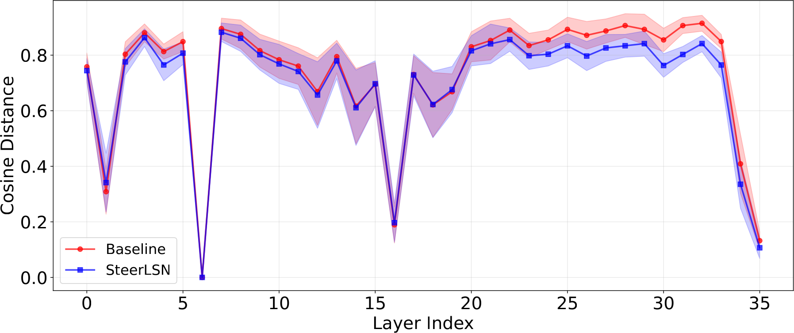

Figure 1. t-SNE of layer-wise representations from Qwen3-4B-Instruct, computed on parallel sentences.
Languages form distinct clusters in the lower layers (layer 1), move closer to one another toward the middle layers
(layers 12 and 24), and diverge again in the top layers (layer 36). STEERLSN therefore steers toward English in the
middle of the model (25–75% of the depth) and restores the source language in the top layers (75–100%).
Abstract
Recent advancements in Large Language Models (LLMs) have shown remarkable capabilities in multilingual contexts. However, previous studies suggest that multilingual LLMs primarily rely on the rich semantic knowledge of high-resource (i.e., English) representations to conduct tasks across languages. To mitigate the performance gap arising from resource imbalances, we propose Steering via Language-Specific Neurons, a training-free method that aligns non-English representations with the English manifold intervening on language-specific neuron activations via linear interpolation toward English activation prototypes. Experimental results show that the proposed method generally improves downstream task performance with minimal computational cost, yielding performance gains for low-resource scenarios where limited data often constrains knowledge coverage. Our findings suggest that the fundamental limitations of low-resource languages can be effectively alleviated by leveraging the robust representation space of high-resource languages, offering a promising direction for more balanced multilingual LLMs.
STEERLSN (Steering via Language-Specific Neurons) rests on the Conceptual Access Hypothesis: low-resource
performance is limited not only by missing knowledge but also by limited access to the English-centric conceptual space
where that knowledge is more effectively used. The method changes only feed-forward neuron activations at inference time;
no weights are updated and no extra low-resource data is needed.
Find language-specific neurons. Language-conditioned activations aji (neuron j at layer i)
are collected on FLORES+ parallel sentences. LSNs are selected with LAPE: neurons whose activation probability is above the
95th percentile are kept, and the bottom 1% by LAPE score are taken as LSNs. This gives a source-language set
Ssrc and a target-language (English) set Stgt.
Stage 1: steer toward the target language (25–75% of the model depth). Source-language LSNs are
linearly interpolated toward the mean target-language activation μaStgti, and target-language LSNs
are set to that mean, with steering strength α∈(0,1].
a~ji=⎩⎨⎧(1−α)aji+αμaStgtiμaStgtiajiif j∈Ssrc,if j∈Stgt,otherwise.
Source LSNs are not zeroed out: because neurons are polysemantic, zeroing can suppress task-relevant signals.
Stage 2: restore the source language (75–100% of the depth). The roles are swapped so that the
model answers in the input language again:
a~ji=⎩⎨⎧μaSsrci(1−α)aji+αμaSsrciajifor j∈Ssrc,for j∈Stgt,otherwise.
Because only LSN activations change, the shift of the residual stream
Δhi+1=(Widown)⊤ΔaSi stays inside a low-dimensional subspace spanned by the output
directions of those neurons, instead of perturbing the representation arbitrarily. The strength α is chosen by
grid search over (0,1] in steps of 0.1 on a 20% validation split, and the same value is used for all steered layers.

Figure 2. Layer-wise cosine distance between Turkish and English representations in Qwen3-4B-Instruct
when the input is Turkish. In Stage 1 (25–75% of the depth) STEERLSN moves the Turkish representation closer to
English than the baseline; in Stage 2 the distance returns toward the baseline trajectory as the source language is restored.
Main Results
Largest gains for medium-resource languages. On Global MMLU with Qwen3-4B-Instruct, STEERLSN raises
accuracy from 37.50 to 45.75 for Turkish (+8.25 points) and from 23.56 to 30.94 for Hindi (+7.38 points).
High-resource languages also benefit. Five of the six non-English high-resource languages improve on
Global MMLU with Qwen3-4B-Instruct (e.g. Japanese 55.94 → 58.81, German 58.88 → 60.94).
Modest gains for the lowest-resource language. Swahili improves from 29.13 to 29.81 (Qwen3-4B) and from
41.12 to 41.31 (Llama3.1-8B) on Global MMLU.
Culture-linked knowledge transfers too. For Qwen3-4B-Instruct, accuracy on culturally sensitive questions
about English-speaking countries rises by 3.33 points on average (to 45.29), and on culturally agnostic questions by
2.26 points (to 52.89). With Chinese instead of English as the target for Hindi, the culturally sensitive gain is smaller
(+1.96 vs. +3.92).
Little change on MGSM. Math word problems depend on procedural multi-step reasoning rather than
language-attributed knowledge, so improved conceptual access alone gives little to no improvement there.
Table 1. Accuracy (%) on Global MMLU and MGSM for Qwen3-4B-Instruct and Llama3.1-8B-Instruct, without and
with STEERLSN (English is the target language). Bold marks the better of the two. Resource level: en highest; zh, ru, de,
ja, fr, es high; tr, hi, bn medium; sw low.
Benchmark
Model
en
zh
ru
de
ja
fr
es
tr
hi
bn
sw
Global MMLU
Qwen3-4B
67.88
62.68
59.44
58.88
55.94
61.31
60.38
37.50
23.56
45.50
29.13
+ STEERLSN
–
62.31
59.94
60.94
58.81
61.75
61.75
45.75
30.94
45.38
29.81
Llama3.1-8B
67.19
55.19
54.50
56.50
50.81
57.12
56.88
45.75
44.06
41.56
41.12
+ STEERLSN
–
55.19
55.50
56.44
51.31
56.44
58.25
46.25
44.31
42.75
41.31
MGSM
Qwen3-4B
32.80
27.60
34.80
30.40
23.60
28.80
33.60
–
–
26.80
8.40
+ STEERLSN
–
24.80
34.00
31.20
24.40
28.40
33.20
–
–
26.40
10.00
Llama3.1-8B
9.60
1.20
14.00
14.40
5.60
13.60
11.60
–
–
11.60
10.80
+ STEERLSN
–
11.20
13.20
14.00
8.00
12.80
12.40
–
–
11.20
11.20
BibTeX
@inproceedings{kim-etal-2026-steerlsn,
title = "{STEERLSN}: Training-Free Representation Alignment through Language-Specific Neuron Subspace Interpolation",
author = "Kim, Minjun and
Kim, Dongyeon and
Song, Hoyun and
Kim, Jihyo and
Lim, KyungTae",
editor = "Zhang, Yue and
Xu, Ruifeng and
Purwarianti, Ayu and
Rong, Tong and
Suzuki, Jun",
booktitle = "Findings of the {A}ssociation for {C}omputational {L}inguistics: {IJCNLP}-{AACL} 2026",
month = nov,
year = "2026",
address = "Hengqin, China",
publisher = "Association for Computational Linguistics",
url = "https://aclanthology.org/2026.findings-aacl.51/",
doi = "10.18653/2026.findings-aacl.51",
pages = "1005--1018",
ISBN = "979-8-89176-444-6"
}